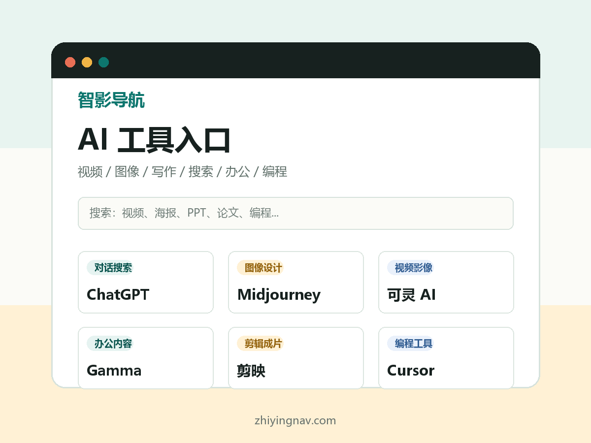

综合
ChatGPT
适合头脑风暴、写作、总结、图片理解、资料整理和日常问答。
打开官方入口AI video · image · writing · productivity
把常用 AI 视频、图像、写作搜索、办公设计和编程工具整理成一个入口。先按场景找官方入口，再决定要不要注册、试用或付费。

Tool Finder
入口优先指向官方站点。价格、额度、地区可用性和具体功能以各工具官方页面为准。
适合头脑风暴、写作、总结、图片理解、资料整理和日常问答。
打开官方入口适合长文阅读、写作润色、方案分析和复杂文档处理。
打开官方入口适合搜索辅助、图文理解、资料解释和 Google 生态任务。
打开官方入口适合中文长文档阅读、材料整理、论文报告初筛和摘要。
打开官方入口适合中文问答、写作改写、学习解释和轻量创作。
打开官方入口适合中文写作、资料总结、图片理解和办公任务拆解。
打开官方入口适合带来源的资料检索、竞品调研、趋势查询和快速查证。
打开官方入口适合风格化图片、概念视觉、封面灵感和视觉探索。
打开官方入口适合中文图像生成、短视频素材、分镜灵感和内容创作。
打开官方入口适合海报、PPT、社媒图、封面和轻量设计模板。
打开官方入口适合 AI 视频生成、影像编辑、创意短片和实验视觉。
打开官方入口适合文生视频、图生视频、镜头运动和中文创作者视频素材。
打开官方入口适合短视频生成、风格化动画、产品展示和创意片段。
打开官方入口适合短视频剪辑、字幕、模板化成片和社媒内容发布。
打开官方入口适合快速生成演示文稿、项目说明页和结构化视觉文档。
打开官方入口适合文档、表格、PPT、PDF 阅读和办公套件内处理。
打开官方入口适合在编辑器里写代码、改代码、读项目和生成小工具。
打开官方入口适合在主流 IDE 中补全代码、解释代码和辅助开发流程。
打开官方入口没有匹配结果。换一个关键词，或切回“全部”。
Use Routes
先用 ChatGPT 或 Kimi 写脚本，再用即梦、可灵或 Runway 出分镜素材，最后用剪映成片。
先让通用模型给版式方向，再用 Midjourney 或即梦出图，最后用 Canva 调整文字和尺寸。
先用 Perplexity 查资料来源，再用 Claude、Kimi 或 ChatGPT 梳理结构，最后用 Gamma 或 WPS AI 生成初稿。
Prompt Starters
我想完成【任务】，预算是【免费/低预算/可付费】，设备是【电脑/手机】，请推荐 3 个工具并说明选择顺序。
请把【主题】拆成 60 秒短视频脚本，包含开头钩子、3 个信息点、画面建议和结尾行动。
请围绕【问题】列出需要核验的事实点、检索关键词、可信来源类型，并给出最终报告大纲。
Submit
后续可以把这里接到邮箱、表单、公众号或后台。现在先作为公开导航页，把核心入口跑通。